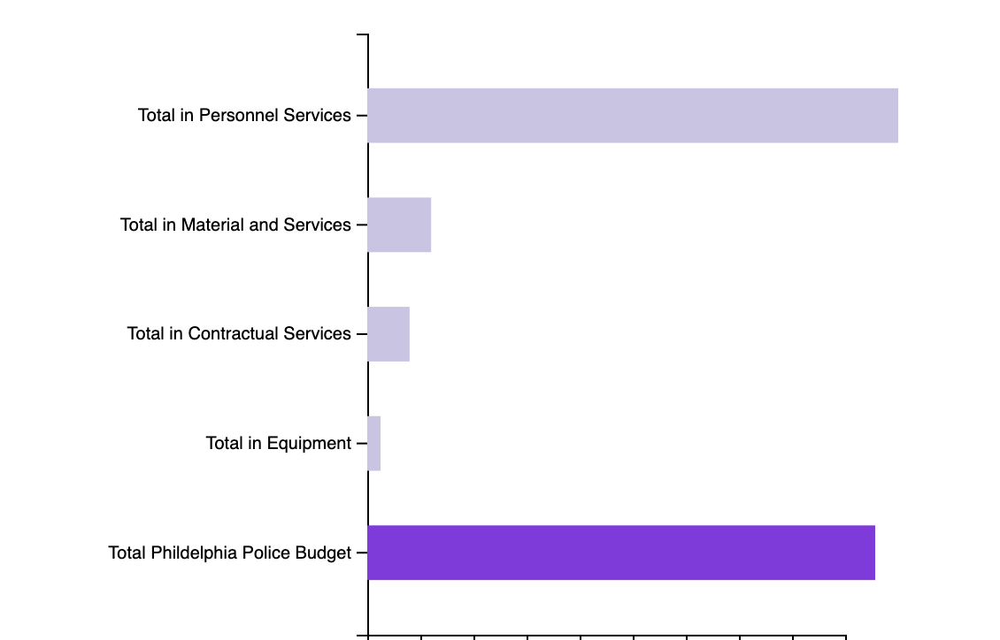
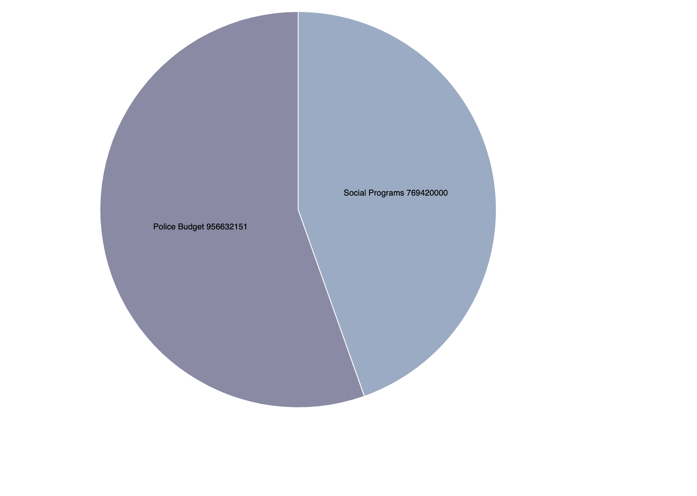

Analysis
The data I gathered compares differently in the data gathered from the result in New York data visualizations.Similarly Philadelphia received immense support monterallity for their police department resulting in $956,632,151 compared to NYPD’s 5.5 billion. However although the NYPD did receive more funding than Philadelphia due to high population this didn’t cease to end the issue. The Philadelphia Police department still received more funding in community programming than those seeking help for mental health resources, affordable housing infrastructures,anti-poverty programs, houseless initiatives and Supplemental Nutrition Assistance Program (SNAP) program recipients and domestic violence support.
  -->